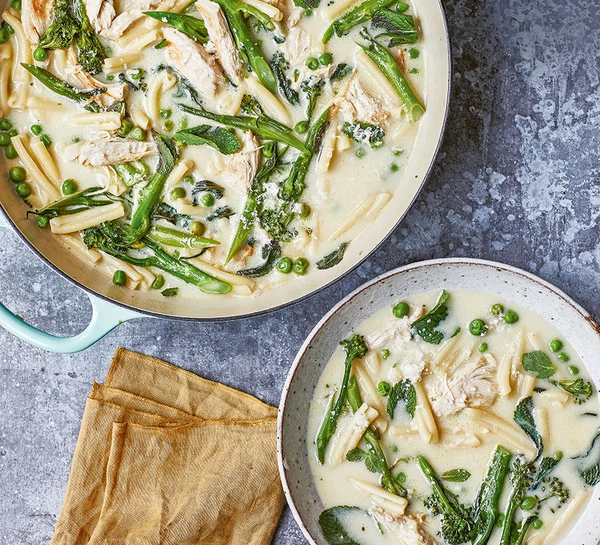

Creamy One - Pan Chicken and Broccoli Pasta

Description
Who doesn't love a creamy chicken pasta? If you don't have broccoli, there are so many alternatives - green beans, halved brussels sprouts or leafy greens
Ingredients
- 1 tbsp olive oil, for frying
- 200g cooked chicken, torn into pieces
- 2 garlic cloves, thinly sliced
- 1 chicken stock cube
- 160g dried short pasta
- 100g frozen peas
- 220g long stem broccoli, cut into 3-4 pieces
- 150g creme fraiche
- 1 lemon, juiced
- 30g parmesan, grated plus extra to serve
- small bunch fresh mint, leaves picked
Method
- Drizzle a little oil into a large, high-sided frying pan set over a medium heat. When the pan is hot, add the chicken and garlic, and fry for 5 mins, stirring often so it doesn't burn. Pour in 900ml boiling water, then add the stock cube and pasta along with some seasoning. Bring to the boil, then cover and simmer for 8 mins.
- Stir in the peas and broccoli for the last 4 mins of cooking time, and replace the lid. You might need to increase the heat slightly to get the temperature back up to a simmer. Add a splash more water if the pasta is looking dry. After 4 mins, remove the lid and reduce the heat to low, then stir in the crème fraîche. Taste for seasoning. Remove the pan from the heat and stir through the lemon juice, parmesan and mint leaves. Finish with some extra parmesan, if you like.